Architecture for Extreme Environments
Team Members:
Project Manager: Leah Callahan
Designers: Sydney Patton, Grace Winiger, Emily Mixter, Ian Buchanan
Developers: Brandon Groff, Michael Adair
Video: Jacob Guenin, Dustin Grissom
Comm: Miller Kern
UX: Viveka Melo, Madeleine Jordan
Role: Design
Architecture for Extreme Environments is an identity and website created by a team at the Digital Corps for an architecture class at Ball State. The class sends students to a different extreme environment every year so the students can build a structure to withstand the elements. In 2017, they went to Death Valley, check out the website we make for the Heat trip here. This project included identity design for the class and web design.
 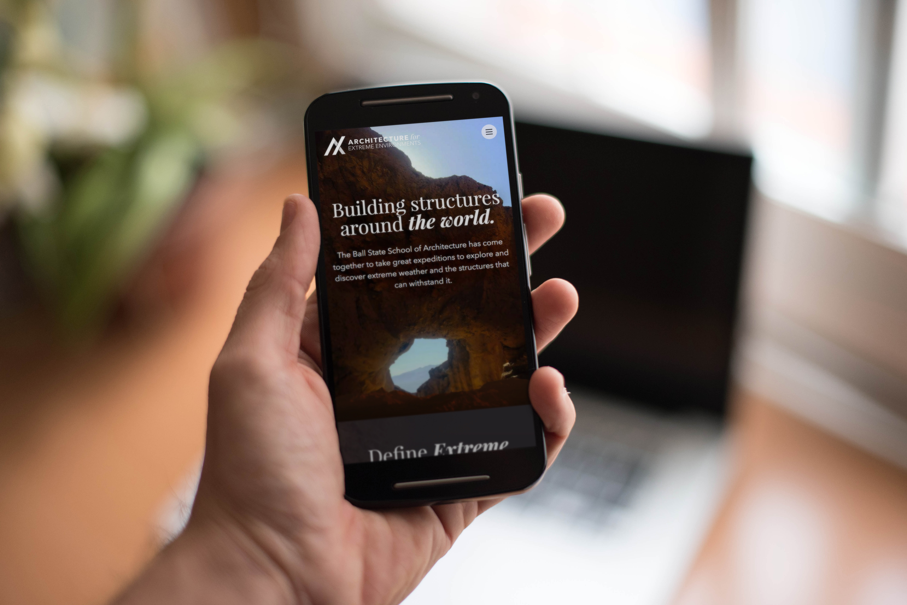
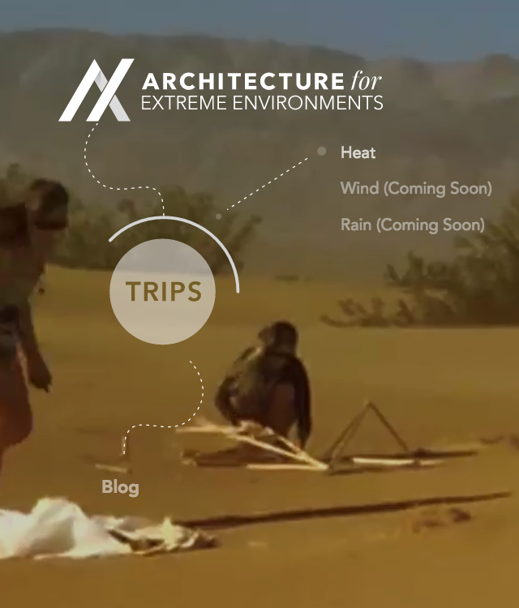
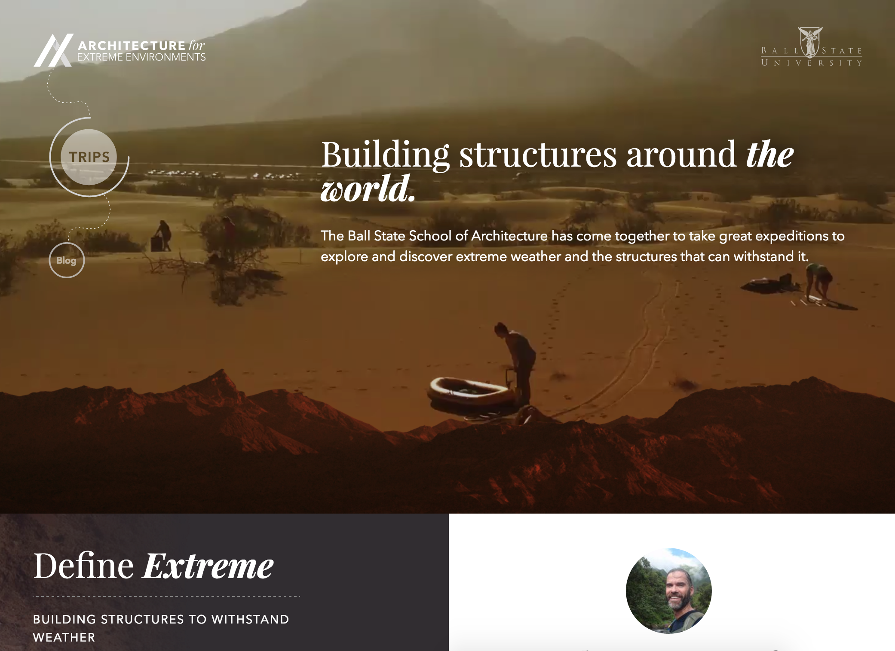
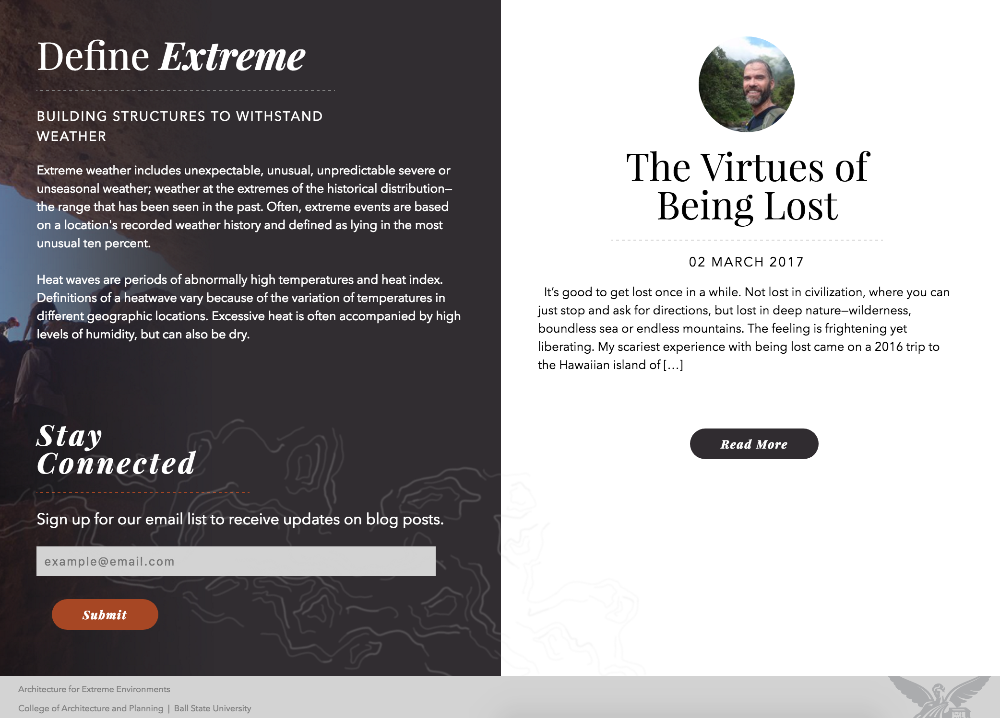
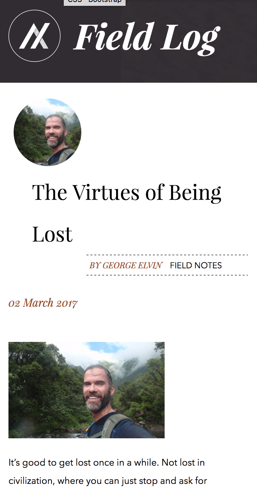
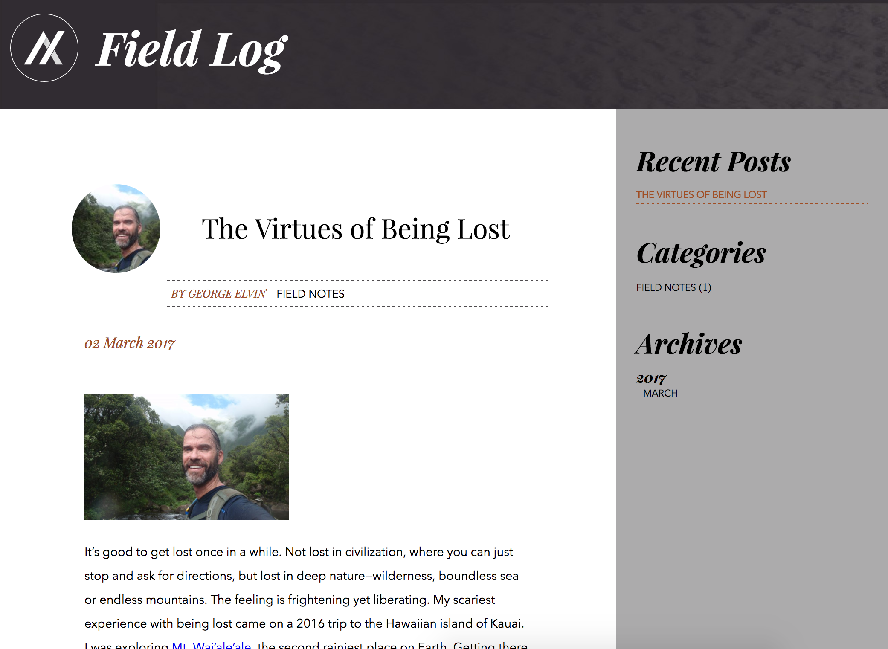
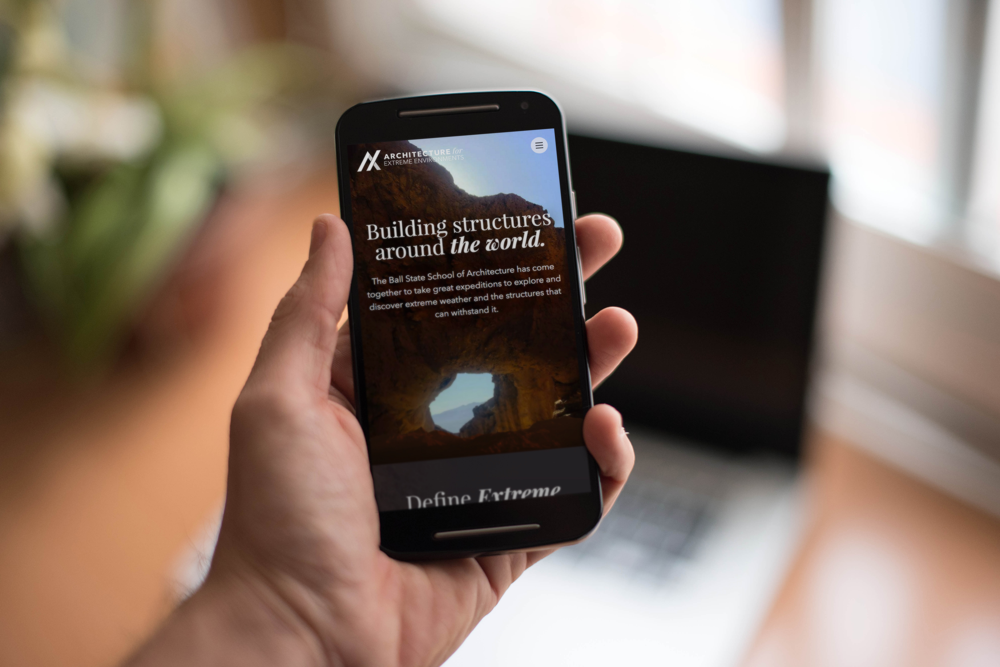
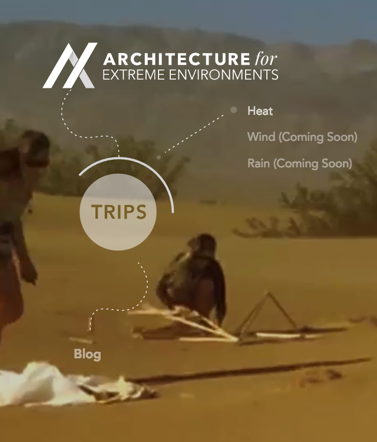
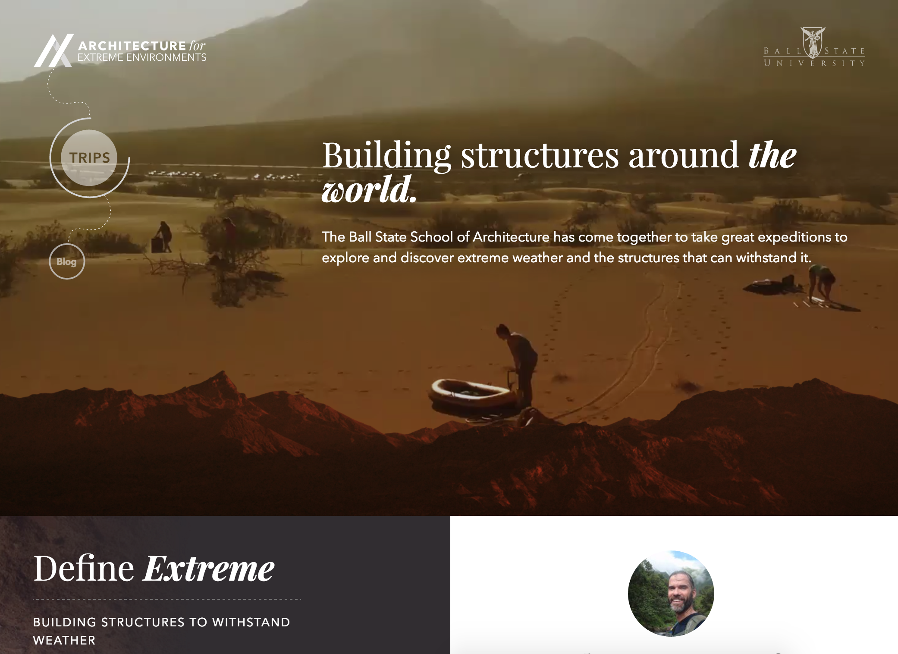
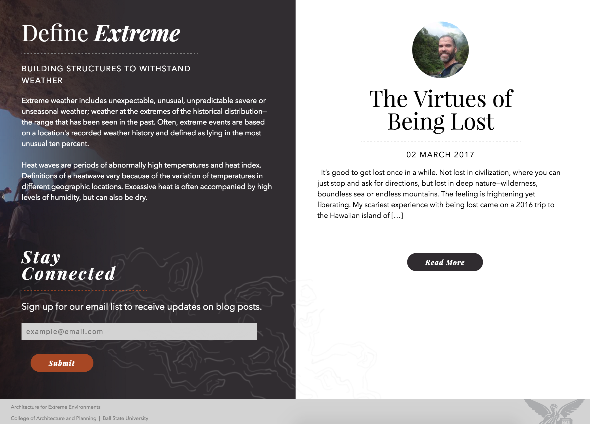
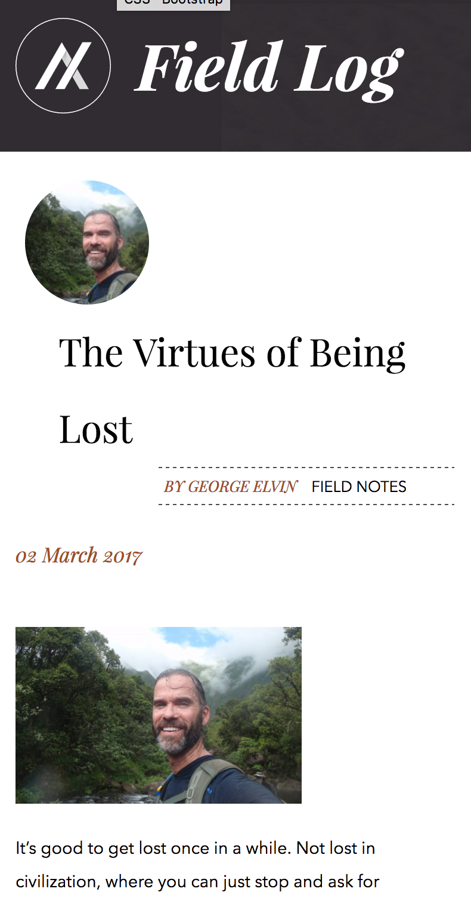
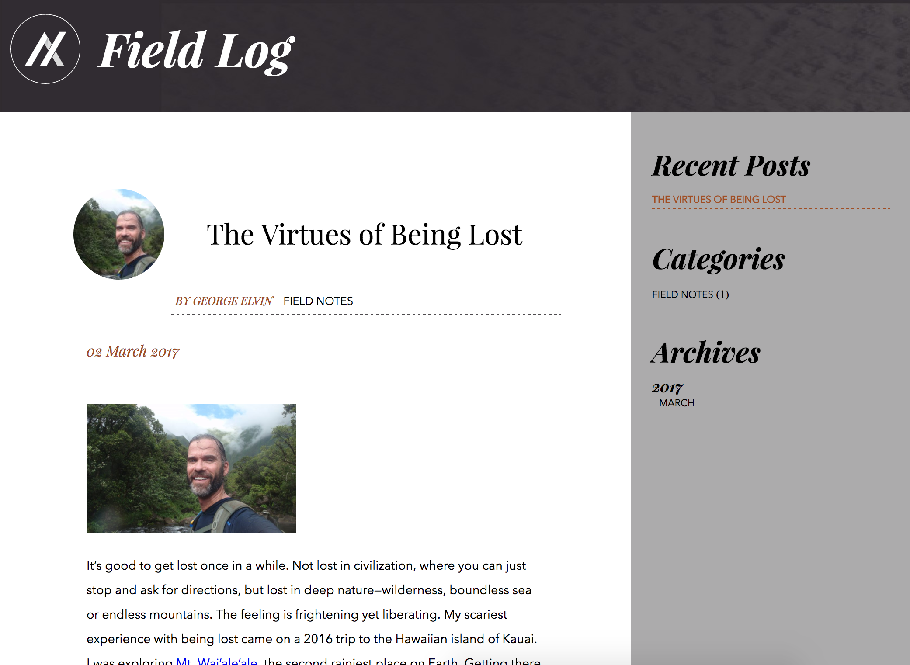